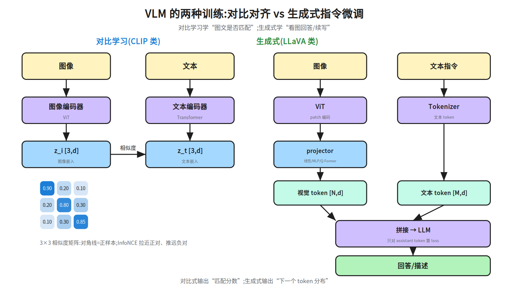
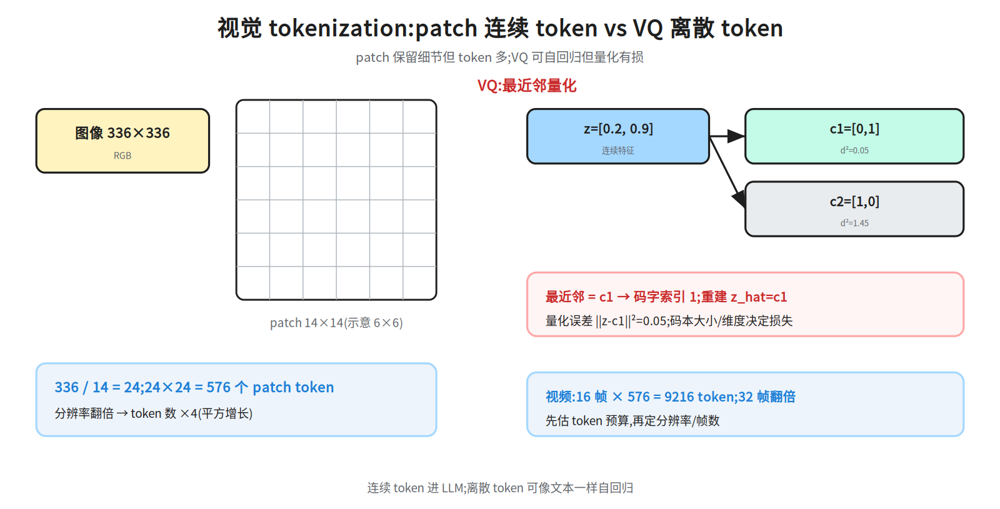
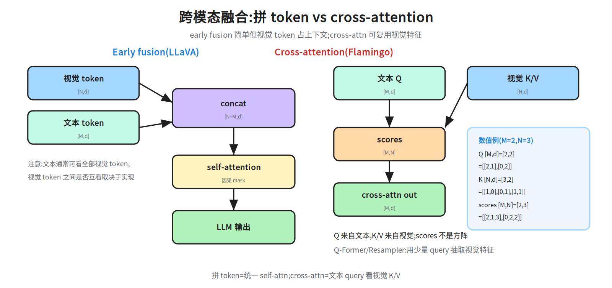
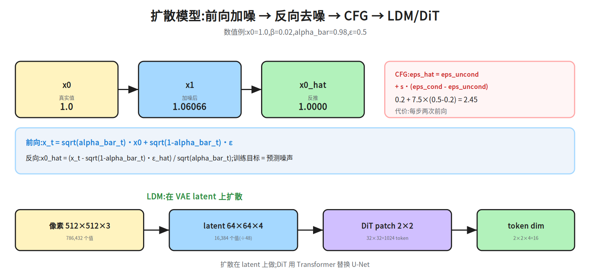
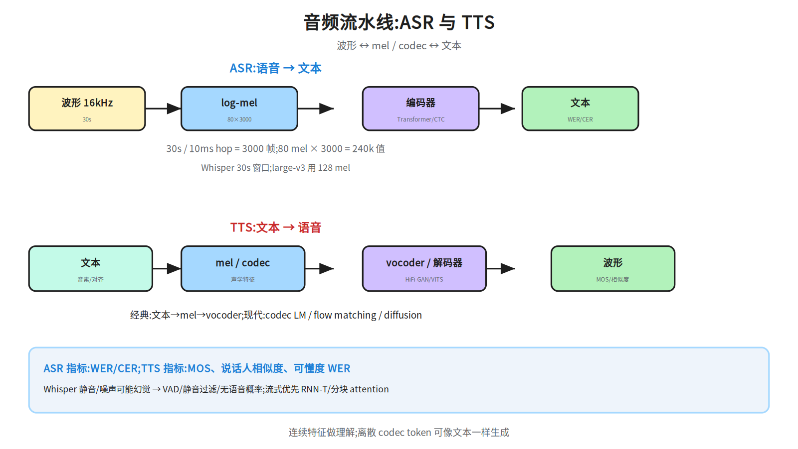

第十九层 · 多模态深化 —— VLM、视频/音频与扩散¶
本层回答:VLM 到底怎么训练(对比 vs 生成)?视觉 token 怎么来(patch/VQ)?图文怎么融合?视频/音频管线怎么估成本?扩散模型的前向/反向、CFG、LDM/DiT 怎么推导与复算?
前置(按节) - §1–§4:先看
notes/12_multimodal.md §1–§3(VLM 概览/tokenization/融合)。 - §5 扩散:先看notes/12_multimodal.md §4–§5(DDPM/LDM/DiT 概览);本篇给公式与数值链。 - §6 音频:先看notes/12_multimodal.md §6;§7 评测:先看notes/12_multimodal.md §7与notes/09_evaluation.md。建议路径(2 次 × 45 分钟) - 第 1 次(必学):§1 VLM 训练 + §2 视觉 tokenizer + §3 融合 + §4 指令微调/现代变体(55a–55c)。 - 第 2 次(必学):§5 扩散数值链 + §6 视频/音频 + §7 评测与安全(55d/55e)。
0. 依赖图(学习顺序)¶
graph TD
A["图像/视频/音频<br/>连续信号"] --> B["视觉/音频 tokenizer<br/>patch / VQ / mel / codec"]
B --> C["编码器<br/>ViT / audio encoder"]
C --> D["对齐/融合<br/>projector / Q-Former / cross-attn"]
E["文本 token"] --> D
D --> F["LLM 生成<br/>VQA/描述/对话"]
G["噪声 + 条件"] --> H["扩散去噪<br/>DDPM / CFG / LDM / DiT"]
H --> I["图像/视频生成"]
B --> J["ASR / TTS"]
F --> K["评测与安全"]
I --> K
J --> K与 12 的分工:12 是“多模态全景”:每块给直觉、代表性数字和一个数值例。 19 只补深水区:VLM 训练目标与 projector/Q-Former 的取舍、VQ 量化与 token 预算、 扩散的公式/CFG/LDM/DiT 计算链、音频管线与指标。12 已讲的定义不重复推导。
1. VLM 训练:对比对齐 vs 生成式指令微调¶
1.1 对比学习(CLIP 类)¶
一对图文 (I, T) 分别过图像/文本编码器,得到 z_i, z_t,做归一化后算相似度矩阵:
对角线是正样本;温度 τ 控制分布的尖锐程度。训练后,图像/文本嵌入在同一空间,可做零样本分类/检索。
CLIP vs SigLIP:
- CLIP:对
N×N相似度矩阵做 softmax 对比损失(InfoNCE),依赖 batch 内的负样本;batch 越大,负样本越多,效果通常越好,但显存/通信成本高。 - SigLIP:对每个图文对做 sigmoid 二分类(匹配/不匹配),不要求整行 softmax 归一化;对 batch 大小的依赖更弱,小/中 batch 往往更稳,训练也更易扩展。两者都不是“没有负样本”,而是负样本的组织方式不同。
- 选择:数据/算力有限时 SigLIP 常更友好;需要经典 CLIP 生态/蒸馏时仍常用 CLIP。具体效果依数据与规模,不要把它说成绝对优劣。

数值直觉(3×3,示意):
对角线应被推高,非对角线被压低。能回答:图文是否匹配、检索/零样本。 不能回答:细粒度问答、计数、空间关系;需要生成式训练。
1.2 生成式(LLaVA 类)¶
图像 → ViT → patch 向量 [N, d_v] → projector → 视觉 token [N, d_model]
文本 → tokenizer → 文本 token [M, d_model]
拼接 [视觉; 文本] → LLM → 回答
训练通常两阶段:
- 对齐预训练:冻结 LLM,只训 projector(或只训少量参数),用图文对教“视觉 token 与词空间对齐”;
- 指令微调:解冻 LLM(或 LoRA),用视觉问答/对话数据教“看图回答”;loss 只对 assistant token 算。
对比:
| 对比式(CLIP) | 生成式(LLaVA) | |
|---|---|---|
| 输出 | 匹配分数/嵌入 | 下一个 token 分布 |
| 监督 | 图文对(正/负) | 回答文本(教师强制) |
| 强项 | 检索、零样本分类 | VQA、描述、对话 |
| 弱项 | 细粒度生成 | 需要高质量指令数据 |
1.3 Projector / Q-Former:对齐与压缩¶
- 线性层:最便宜,LLaVA-1 用;把
d_v投到d_model。 - 2 层 MLP:LLaVA-1.5 用;非线性更强,参数量仍小。
- Q-Former / Perceiver Resampler:用
K个可学 query 从N个视觉特征里抽取,输出K个 token(K << N);省上下文,但可能丢细节。 - 动态分辨率:Qwen2-VL 类把大图切块,保留更多 patch;代价是 token 数可变、批处理复杂。
面试口径:projector 决定“视觉特征能不能被 LLM 读”;Q-Former 决定“用多少 token 读”。token 数 = 成本,细节 = 能力,二者要按任务权衡。
2. 视觉 tokenizer:patch vs VQ¶
2.1 Patch token(连续)¶
数值:
224/14 = 16 → 16×16 = 256;加 [CLS] = 257
336/14 = 24 → 24×24 = 576(LLaVA 常用)
672/14 = 48 → 48×48 = 2304
分辨率翻倍 → token 数 ×4;视频再乘帧数:
2.2 VQ token(离散)¶
VQ-VAE/VQGAN 把连续特征 z 量化到码本 {c_k}:

数值:
z = [0.2, 0.9]
c1 = [0, 1] → ||z-c1||² = 0.2² + (-0.1)² = 0.05
c2 = [1, 0] → ||z-c2||² = (-0.8)² + 0.9² = 1.45
→ 选 c1,码字索引 1;重建 z_hat=[0,1];量化误差 0.05
VQ 的损失通常包含:重建损失 + 码本损失 + commitment loss。码本大小/维度决定信息损失;离散 token 可像文本一样自回归生成。
codebook collapse(码本坍缩):训练中编码器可能只反复使用少数码字,其余码字变成“死码”,有效码本变小、重建变差。常用缓解:
- EMA 更新码本:用编码器输出的指数滑动平均更新码字,而不是只靠码本损失的梯度;
- commitment loss:
β·||z - sg[c]||²,让编码器输出靠近所选码字(sg为 stop-gradient); - 死码重启/重初始化:长时间不被选中的码字用随机样本或当前 batch 的编码重置;也可用 k-means 初始化、码本归一化、温度/噪声。
- 监控:每码字使用率、perplexity、死码比例;不要只看重建 loss。
注意:VQ 的“离散化”本身有损;collapse 是优化/使用率问题,和量化误差不是同一件事。
Token 预算:先定“视觉 token 上限”,再反推分辨率/帧数/是否用 Q-Former 压缩。不要先拉满分辨率再发现上下文爆了。
3. 跨模态融合:拼 token vs cross-attention¶
| 方式 | 做法 | 代表 | 代价 |
|---|---|---|---|
| Early fusion | 视觉 token 与文本 token 拼接,统一 self-attn | LLaVA | 视觉 token 占上下文 |
| Cross-attention | 文本 Q 看视觉 K/V | Flamingo | 额外 cross-attn 层,训练复杂 |
| Resampler | 少量 query 抽取视觉特征 | Q-Former/Perceiver | 压缩但可能丢细节 |

形状与数值:
Early fusion:
视觉 [N,d] + 文本 [M,d] → concat [N+M,d] → self-attn
Cross-attention:
Q 来自文本 [M,d],K/V 来自视觉 [N,d]
scores = Q·K^T [M,N] ← 不是方阵
小例 M=2, N=3, d=2:
因果 mask 细节:early fusion 中文本通常能看全部视觉 token;视觉 token 之间是否互看取决于实现。训练/推理必须一致。
4. VLM 指令微调与现代变体¶
- LLaVA:CLIP ViT-L/14-336 → 576 token;2 层 MLP projector;两阶段训练。
- Qwen2-VL:动态分辨率/NaViT,大图切块;适合文档/小字,但 token 数可变。
- Chameleon:从预训练起就把离散视觉 token 与文本 token 放同一 Transformer;统一理解/生成,训练要求高。
- Janus:理解用连续视觉特征、生成用离散 token,两条路径解耦,减少任务冲突。
指令数据:VQA、描述、对话、OCR、图表、代码/截图;要覆盖“拒答/不确定性/安全”。数据质量比堆量更重要。
5. 扩散深化:DDPM → CFG → LDM/DiT¶
5.1 前向:一步跳到任意 t¶
q(x_t | x_{t-1}) = N( sqrt(1-β_t) x_{t-1}, β_t I )
α_t = 1-β_t, alpha_bar_t = Π_{s=1}^t α_s
x_t = sqrt(alpha_bar_t) x_0 + sqrt(1-alpha_bar_t) ε, ε~N(0,I)
数值:x_0=1.0, β=0.02, alpha_bar=0.98, ε=0.5
5.2 反向:预测噪声,反推 x0¶
用 ε_hat=0.5:
完整采样一步(DDPM):

5.3 Classifier-free guidance(CFG)¶
训练时以一定概率(如 10%)把条件置空;采样时:
数值:eps_uncond=0.2, eps_cond=0.5, s=7.5
s=1 无引导;s>1 更贴条件但可能过饱和/多样性下降;每步两次前向(有条件+无条件)。negative prompt 把 eps_uncond 换成 eps_neg。
5.4 Latent Diffusion 与 DiT¶
LDM:在 VAE latent 上扩散,而不是像素空间。
512×512×3 = 786,432 个值
→ VAE encoder → 64×64×4 = 16,384 个值(下采样 8×,约 ÷48)
在 latent 上做扩散;文本条件通过 cross-attention 注入
→ VAE decoder → 图像
DiT:用 Transformer 替换 U-Net。
latent 64×64×4, patch 2×2 → 32×32 = 1024 个 token
每个 token:2×2×4 = 16 维 → 线性投影到 d_model
条件:adaLN-Zero 注入时间步/类别
能回答:扩散为什么预测噪声、CFG 怎么放大条件、LDM/DiT 为什么省算力。 不能回答:具体采样器/步数的质量;不同 schedule/模型差异很大,要实验。
6. 视频与音频:token 预算与管线¶
6.1 视频¶
- 均匀采样
F帧,每帧N个 patch →F×Ntoken;加时间位置编码; - 或 3D tubelet 一次编码时空 patch;
- 长视频要分层/稀疏采样;先估预算:
6.2 ASR¶
30 秒、10ms hop → 3000 帧;80×3000=240,000 个值。Whisper 用 30s 窗口;large-v3 用 128 mel。指标 WER/CER。
幻觉:静音/噪声/音乐上可能“编”文本;用 VAD/静音过滤/无语音概率,不要盲信输出。流式优先 RNN-T/分块 attention。
6.3 TTS¶
经典 vocoder:HiFi-GAN;端到端:VITS;现代:flow matching/diffusion(F5-TTS、CosyVoice)。指标 MOS、说话人相似度、可懂度 WER。

7. 评测与安全¶
| 任务 | 基准/指标 | 坑 |
|---|---|---|
| 图像问答 | VQAv2、MMMU、MathVista;准确率 | 题目难度/答案格式 |
| 文档 | DocVQA;ANLS/准确率 | OCR/版面 |
| 描述 | COCO Caption;CIDEr/BLEU | 指标与人类偏好不一致 |
| 视频 | MVBench 等;准确率 | 帧采样/时序推理 |
| 语音识别 | LibriSpeech;WER | 口音/噪声域外 |
| 语音合成 | MOS/说话人相似度 | 主观、样本少 |
| 生成 | FID、CLIPScore、人类偏好 | FID 依赖特征提取器 |
安全:
- 幻觉:描述图中不存在的东西;用 grounding/引用/不确定性;
- 视觉 prompt injection:图片里嵌文字指令/对抗 patch;
- NSFW/暴力:输入输出过滤;
- 隐私/版权:人脸、PII、训练图像版权;水印/溯源;
- 偏见:人物描述/职业/性别刻板;分群体评测。
8. 面试要点¶
- 对比式 vs 生成式 VLM? → 对比学图文匹配(CLIP);生成学看图回答(LLaVA),loss 是 next-token。
- projector 与 Q-Former 的区别? → 线性/MLP 逐 token 投影;Q-Former 用少量 query 压缩,省 token 但可能丢细节。
- 图像 patch 数怎么算? →
(H/P)×(W/P);336/14=24²=576;224/14=16²=256(+CLS)。 - VQ 怎么量化? → 最近邻码字;
k*=argmin||z-c_k||²;数值 z=[0.2,0.9]→c1,误差 0.05。 - early fusion vs cross-attn? → 拼接统一 self-attn vs 文本 Q 看视觉 K/V;scores 形状 [M,N]。
- DDPM 前向/反向? → 闭式加噪;预测噪声;
x0_hat反推。 - CFG 公式与代价? →
eps_uncond+s(eps_cond-eps_uncond);每步两次前向;s 过大过饱和。 - LDM 为什么省? → 在 64×64×4 latent 上扩散,而不是 512×512×3 像素。
- DiT 的 token 数? → 64×64 latent、patch 2×2 → 32²=1024 token,每 token 16 维。
- 视频/音频 token 怎么估? →
F×N;30s/10ms=3000 帧,80×3000=240k mel 值。 - ASR 幻觉怎么防? → VAD/静音过滤/无语音概率;流式用 RNN-T/分块 attention。
- 多模态评测的坑? → 帧采样、OCR、指标与人类偏好不一致、幻觉/偏见/注入。
常见坑¶
- 把 VLM 说成“LLM 直接看图”:必须有视觉编码器 + 对齐投影。
- 把 projector 越复杂越好:Q-Former 省 token,但可能丢细节。
- 把 VQ 当无损:量化有误差;码本大小/维度决定损失。
- 把 DDPM 训练目标说成“预测原图”:标准是预测噪声(或 v/score)。
- 把 LDM 的下采样说成无损:VAE 是有损压缩。
- 把 ASR 的 WER 与 TTS 的 MOS 混用。
- 只测干净图片/标准口音,不测对抗/域外/多语。
动手清单¶
- patch/token 计算器:输入 H、W、P、帧数,输出 token 数;验收:224/14=256(+CLS)、336/14=576、16 帧=9216。
- VQ 复算:给定 z 和两个码字,手算 L2 距离、索引、量化误差;验收:与 §2.2 数值一致。
- DDPM 复算:用 §5 的数字复算
x_1、x_0_hat、CFG;验收:1.06066 / 1.0000 / 2.45。 - LDM/DiT 账本:给定像素尺寸和 VAE 下采样,算 latent 值数与 DiT token 数;验收:512²×3→16,384;64² patch2→1024。
相关图¶
55a_vlm_training · 55b_visual_tokenizer · 55c_cross_modal_fusion
· 55d_diffusion · 55e_audio_pipeline(均在 diagrams/,横竖双版本)
下一步¶
Phase 2 完成。下一步按 docs/advanced-roadmap.md §5 选定主/次方向,进入 Phase 3 模块三:按目标岗位/研究问题做 3–5 篇方向深入。